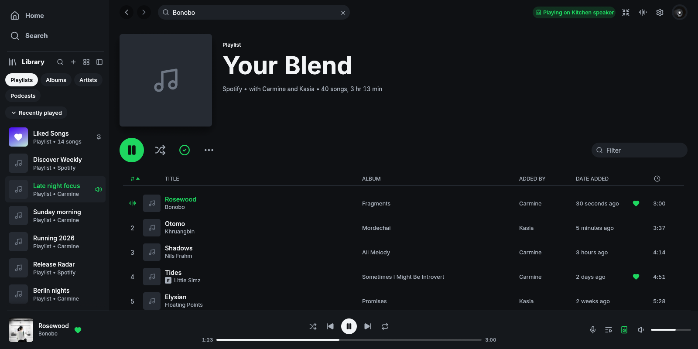

Existing Spotify Blend attribution: contributor names now appear in the byline and, where the existing layout has room, the Added By column. It remains labelled Playlist, not Collaborative Playlist. Navigation, chrome, typography and responsive rules are preserved.
Windows x64 captures, identical offline fixture and native window sizes. Baseline: main d6be3e8 plus fixture 75eca82. Candidate: 66b4ae2. Playlist artwork is suppressed in both. Active shuffle hover is separately covered by rendered dark/light/custom-accent tests. This comparison is evidence for a functional correction, not approval of the paused redesign.
